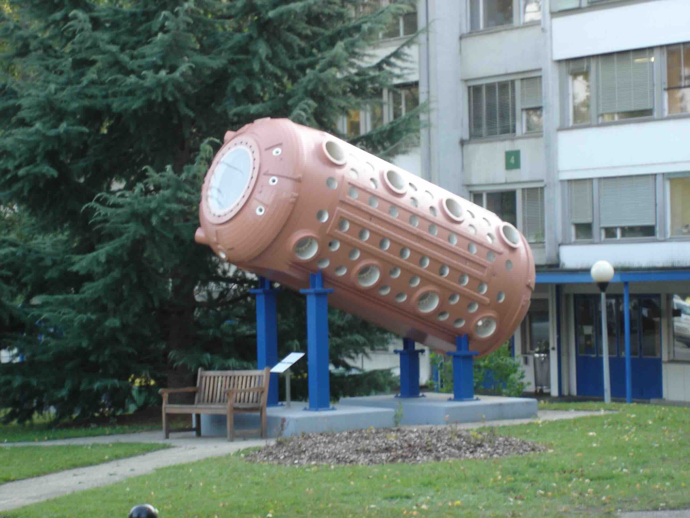

Although parity violation and time reversal violation, both required for
an electric dipole moment (EDM), are features of the Standard Model,
no Standard Model calculation predicts an observable electron EDM.
This makes electron EDM experiments attractive for searching for Beyond Standard
Model Physics: there are no existing effects to subtract out.
And many Standard Model extensions, with new particles and new couplings,
predict much larger electron EDMs, sometimes large enough
to have been observed in existing experiments.
Parity and Time-Reversal Violation
Parity Violation
A permanent electric dipole moment (EDM)
requires both parity (P) violation and time reversal (T) violation.
Parity violation is part of the Standard Model, and parity violation
induced by weak neutral currents, is present in atoms [1].
However the first two experiments, with enough sensitivity
to observe parity violation in atoms, failed to find it.
The Seattle group[2] found a value “considerably smaller”
than the Weinberg-Salam theory and the Oxford group[3] found their
result to be “in disagreement with the Weinberg Salam model...”
They published their results in adjacent papers in
Physical Review Letters[2,3], after earlier publishing a joint letter
in Nature[4] declaring that optical rotation in bismuth,
“if it exists, is smaller than the values predicted by the
Weinberg Salam model...”
The Glashow, Salam, Weinberg model survived these experimental
results because,
four years earlier, the Gargamelle experiment[5] had discovered
weak neutral currents, confirming the
model.
Two years after the Seattle/Oxford results,
Barkov and Zolotorov published results[6] of a
Bismuth optical rotation experiment
with better control of systematic effects[6] and obtained agreement with
prediction.
Parity Violation in Cesium 6S - 7S transitions
Over the next 20 years, atomic parity violation developed into a precision
measurement through the simultaneous development of experiments with excellent
control of systematic effects[7-9] and
accurate atomic structure calculations[10].
The most precise experiments[7-9], for which control of systematic effects
was the major experimental focus,
used a beam of cesium (atomic number Z=55) atoms
and measured the parity-forbidden electric-dipole transition amplitude between
the 6S1/2 ground state and 7S1/2 excited state.
Parity violation effects in atoms scale[8] roughly as Z3, a
feature shared with an electron EDM (see Electron EDMs in Atoms).
Cesium was chosen over other heavy atoms, because[8]
"Cesium has the virtue that it is the
simplest heavy atom, having one S-state electron outside a filled inner core.
Thus it is highly single-electron in character and calculations
of its structure are more direct and accurate than for other heavy atoms.
In addition, there is a wealth of precise experimental data on the various
properties of cesium ground and excited states which can be used for testing
and refining calculations of its wave functions."
L. L. Lewis, J. H. Hollister, D. C. Soreide, E. G. Lindahl,
and E. N. Fortson, "Upper Limit on Parity- Nonconserving Optical Rotation
in Atomic Bismuth,"
Phys. Rev. Lett. 39, 795 (1977)
P. E. G. Baird, M. W. S. M. Brimicombe, R. G. Hunt, G. J. Roberts,
P. G. H. Sandars, and D. N. Stacey, "Search for Parity-Nonconserving
Optical Rotation in Atomic Bismuth,"
Phys. Rev. Lett. 39, 798 (1977)
P. E. G. Baird, M. W. S. M. Brimicombe, G. J. Roberts, P. G. H. Sandars,
D. C. Soreide, E. N. Fortson, L. L. Lewis, E. G. Lindahl & D. C. Soreide,
"Search for parity non-conserving optical rotation in atomic bismuth,"
Nature 264, 528 (1976).

Gargamelle discovered
weak neutral current
in neutrino scattering on both electrons and nuclei in freon
bubble chamber experiments. When the chamber could no longer be used for
experiments, CERN put it on display as a lawn ornament.
"The main advantage lies in the large number of measurements
on different control lines which we have performed.
Before each period of measurements extensive work on the
control lines was carried out to study any false or artificial effects.
This extensive work on the control lines allowed us
to find systematic errors and to get rid of them."
C. S. Wood, S. C. Bennett, D. Cho, B. P. Masterson, J. L. Roberts,
C. E. Tanner,and C. E. Wieman, "Measurement of Parity Nonconservation and
an Anapole Moment in Cesium,"
Science 275, 1759 (1997)
S. L. Gilbert and C. E. Weiman,
"Atomic-beam measurement of parity nonconservation in cesium,"
Phys. Rev. A 34, 792 (1986).
S. L. Gilbert, M. C. Noecker, R. N. Watts and C. E. Wieman,
"Measurement of Parity Nonconservation in Atomic Cesium,"
Phys. Rev. Lett. 55, 2680 (1985).
S. A. Blundell, J. Sapirstein and W. R. Johnson,
"High-accuracy calculation of parity nonconservation in cesium and
implications for particle physics,"
Phys. Rev. D 45, 1602 (1992);
V. A. Dzuba, V. V. Flambaum, and O. P. Sushkov,
"Polarizabilities and parity nonconservation in the Cs atom and limits
on the deviation from the standard electroweak model,"
Phys. Rev. A 56, R4357 (1997);
M. G. Kozlov, S. G. Porsev, and I. I. Tupitsyn,
"High-Accuracy Calculation of 6𝑠 →7𝑠 Parity-Nonconserving Amplitude in Cs,:
Phys. Rev. Lett. 86, 3260 (2001).
Time Reversal Violation
In addition to parity violation, a permanent electric dipole moment
requires time reversal violation. By the CPT theorem, time reversal
violation is equivalent to CP violation where C is charge conjugation,
P is parity and T is time reversal.
Standard Model Electron EDM
CP-violation is a feature of the
Standard Model and is observed in the quark sector in the decay of
neutral K, D, and B mesons.
However the observation of parity violation in weak interactions and of CP violation
in the quark sector,
has not lead to any Standard Model calculation yielding an
electron EDM
large enough to be readily observed[1]. There also exists the possibility that
the neutrinos are Majorana fermions (each its own antiparticle) which allows for
additional mechanisms for generating an electron EDM.
Calculations[2] so far suggest that this too will yield electron EDMs
too small to be readily observed.
The absence of a readily observable Standard Model electron electric dipole
moment makes electric dipole moment experiments attractive for looking for
Beyond Standard Model Physics.
Any observed electron electric dipole moment will come from new physics.
There are no existing effects to subtract out.
Beyond Standard Model Electron EDM
And there are no shortage of such models with new particles,
new couplings, and new sources of CP violation which would produce
an electron EDM. These models typically contain undetermined constants
including the masses of new particles. In some models, the choice of these
constants can lead to predictions of electron EDMs large enough to have been
observed in previous EDM experiments - a tension that experimenters,
confident of their results, might yet point out.
However different choices of masses and couplings can help keep
the model viable in the face of decreasing experimental electron EDM limits.
An insightful catalog of such models can be found in [3]. In addition,
models of electron EDMs appear in all of the papers listed in the sections
on electron EDM constraints on Dark Matter, Baryon Asymmetry,
Axion-Like Particles, and Neutrino Models.
Notes
See, for example, Y. Yamaguchi and N. Yamanaka,
"Quark level and hadronic contributions to the electric dipole moment of
charged leptons in the standard model,"
Phys. Rev. D 103, 013001 (2021),
"Large Long-Distance Contributions to the Electric Dipole Moments of
Charged Leptons in the Standard Model,"
Phys. Rev. Lett. 125, 241802 (2020),
Y. Ema, T. Gao, and M. Pospelov, "Standard Model Prediction for Paramagnetic
Electric Dipole Moments,"
Phys. Rev. Lett. 129, 231801 (2022).
M. Pospelov and A. Ritz,"CKM benchmarks
for electron electric dipole moment experiments,"
Phys. Rev. D 89, 056006 (2014).
See, for example, A. de Gouvea and S. Gopalakrishna,
"Low-energy neutrino Majorana phases and charged-lepton
electric dipole moments,"
Phys. Rev. D 72, 093008 (2006), and
J. P. Archambault, A. Czarnecki, and M. Pospelov,
"Electric dipole moments of leptons in the presence of Majorana neutrinos,"
Phys. Rev. D 70, 073006 (2004),.
W. Bernreuther and M. Suzuki,
"The electric dipole moment of the electron,"
Rev. Mod. Phy. 63, 313 (1992), Erratum
Rev. Mod Phy., 64, 633 (1992) ,
Preprint Although this predates the discovery
of the Higgs, it nevertheless contains a section on (early)
Higgs Models as well as sections on other popular models.